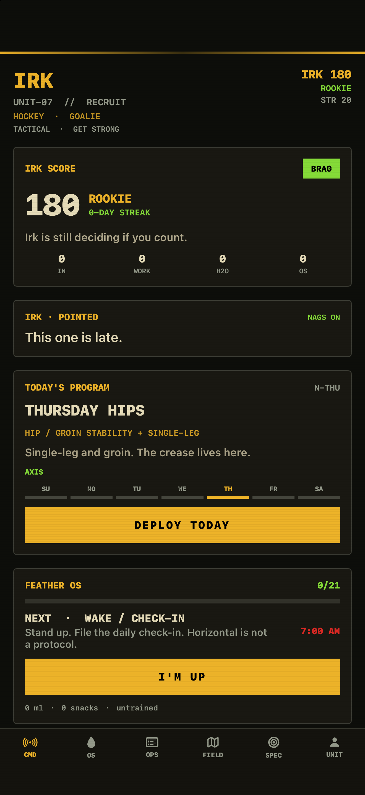
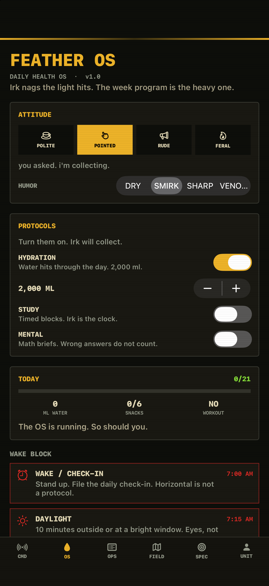
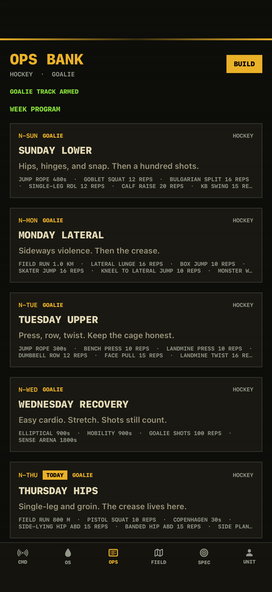

Wake, water, a short move, meals, the day's workout, and wind-down. Clear the day for a Feather Cache.
iPhone
Irk
A training nag with a week program behind it. Water, movement, daylight, and today's session. Miss a slot and Irk comes back.



What it does
Polite, pointed, rude, or feral. One cough, or it stays until you do the thing.
A seven-day training block, a workout bank, a GPS field run, and a camera count for shuttle touches and jump squats.
On the phone
Help
Support
Notifications, the field run, and the lock screen widget.
Privacy
Privacy policy
Your log stays on the iPhone. The banner ad is non-personalized.
Free on iPhone, with a banner ad. Irk is a training nag, not medical advice. © 2026 Justin Novikow